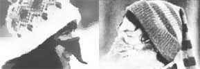

It's not unusual-up here in Alberta, Canada-for the ol' thermometer to read in the minus fifties. That kind of weather can set your cheeks and nose to hurtin' before you're even three feet from the front door.
I've never had any trouble keeping most of my body warm when the temperatures dropped, but my poor old nose is another story! Scarves help but they choke me, face masks are worse than blinders, and balaclavas get all yukky and fog up my eyeglasses immediately. So, out of desperation, I invented the nose warmer!
The design that I came up with works fine, and it's refreshingly easy to make, too. Each "snout-stocking" consists of a little triangle of cloth that's held in place by two loops ... one to hook around each ear. In emergencies, I've made nose warmers out of scraps of denim or wool, but the knitted versions are my special favorites. They can be whipped up in no time, and-unless you have a cold-nosed pet elephant around-you probably have more than enough leftover bits of yarn to do the job.
The basic triangular pattern isn't hard to learn, either, although you'll have to experiment to get just the right sizes. I can't tell you exactly how many stitches to cast on ... that'll depend upon the size of your needles, yarn, and nose. As an example, though, I cast 24 stitches each for the nose warmers in the photographs.
Here's how you do it: Knit the first row and purl the second. Then, on the third (which is a knit row), knit two stitches together at the beginning and the end, and follow with another purl row. From there on, just continue decreasing your count by two stitches in every odd row until just two stitches are left. Knit these last two together, snip off the yarn, and pull it through the last loop to make a knot.
I use the "stockinette" stitch for my nose warmers (alternating knit and purl rows), but any pattern would work. When you finish a triangle, just crochet two chains for the ear loops and sew the little contraption together.
Then, if your friends make jokes about your new eagle-beaked profile, you can knit nose warmers for them, too. After all, a few hours of your time is a small price to pay for "equality before the thaw ......
|
 PHOTO BY DON RE |
|
|